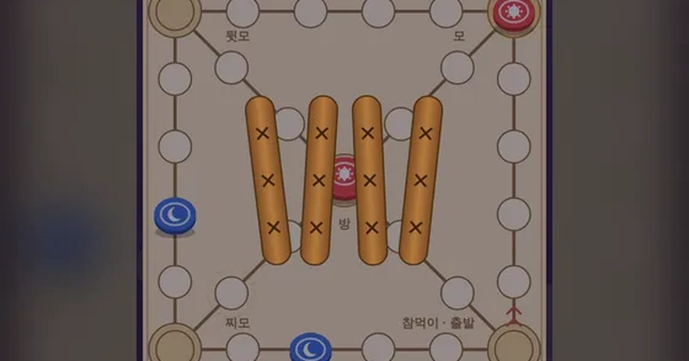

윷놀이
Yut Nori
전통 놀이 · 1P/2P무료설치 없음폰 · PC
▶ 지금 바로 하기로그인 없이 브라우저에서 바로 시작돼요
어떤 게임인가요?
도 · 개 · 걸 · 윷 · 모! 윷을 던져 말 네 개를 먼저 한 바퀴 돌려 내보내면 승리. 모서리에 멈추면 지름길, 내 말끼리 업고 가고, 상대 말을 잡으면 한 번 더!
목표 · 윷을 던져 내 말을 모두 먼저 한 바퀴 돌려 참먹이 밖으로 내보내면 승리.
이렇게도 찾아요
윷놀이 게임온라인 윷놀이명절 놀이윷 던지기전통놀이yutnorikorean board gameyut game
#윷놀이 #명절놀이 #전통놀이 #설날 #추석
게임 방법
- 윷가락 4개 중 평평한 면(배)이 1개면 도(1칸) · 2개 개(2칸) · 3개 걸(3칸) · 4개 윷(4칸) · 하나도 없으면 모(5칸).
- 윷이나 모가 나오면 한 번 더 던져요. 나온 결과를 모아 원하는 순서대로 써요.
- 모서리(모 · 뒷모)나 가운데 방에 딱 멈추면 다음엔 지름길 대각선으로 가요.
- 내 말이 있는 칸에 멈추면 업고 함께 움직여요. 상대 말이 있는 칸에 멈추면 잡아서 집으로 돌려보내고 한 번 더 던져요.
- 빽도: 빨간 점 표시가 있는 윷 하나만 엎어지면 뒤로 한 칸. 참먹이를 지나야 나가요.
등장하는 것들
- 해 말 · 나 · 1P
- 달 말 · CPU · 2P
- 배 (평평한 면) · 개수만큼 칸
- 빽도 표시 · 이것만 엎어지면 뒤로
공략 팁
- 모서리에 멈추면 지름길! 걸·윷으로 모서리를 노려 보세요.
- 상대 말 바로 뒤 1~3칸은 잡히기 쉬워요. 개 · 걸이 가장 잘 나와요.
- 업으면 빠르지만 한꺼번에 잡힐 수도 있어요.
이런 게임도 있어요
 방울 터뜨리기퍼즐 · 조준
방울 터뜨리기퍼즐 · 조준 사과 10 만들기퍼즐 · 두뇌 · 2분
사과 10 만들기퍼즐 · 두뇌 · 2분 타자 게임 · 낱말 비타자 연습 · 키보드
타자 게임 · 낱말 비타자 연습 · 키보드 팽이 싸움전통놀이 · 채찍질
팽이 싸움전통놀이 · 채찍질 무당벌레 오락실오락실 · 미로
무당벌레 오락실오락실 · 미로 성 지키기디펜스 · 전략
성 지키기디펜스 · 전략